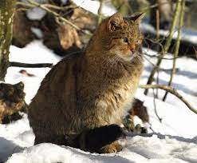
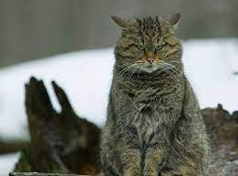

Es un felino de pequeño tamaño, y el antecesor salvaje de los gatos domésticos (Felis silvestris catus). Los gatos salvajes generalmente son de constitución más robusta que sus parientes caseros. Suelen ser de color predominante pardo grisáceo atigrado, más claro y ocráceo en el vientre y partes inferiores, con cuatro rayas negras longitudinales en la frente, que van a converger en una línea que recorre toda la espina dorsal. Los ejemplares de la subespecie europea (Felis silvestris silvestris) tienen una capa de pelo más espesa y la cola más poblada y ancha que la del gato doméstico, con su punta negra y al menos dos franjas negras anchas junto a ella. El gato montés euroasiático a veces puede ser confundido con un gato doméstico asilvestrado de capa parda rayada pero, en el caso de la forma euroasiática, puede diferenciarse por su espesa cola, más robusta y ancha, con terminación roma y redondeada, y con al menos tres anillos negros completamente cerrados. La única prueba morfológica indudable para distinguir al gato salvaje del doméstico es la medición de la capacidad craneana, ligeramente mayor en el primero.
 El área de distribución del gato montés euroasiático abarca Europa , Oriente Medio, sur y centro de Asia y gran parte de África< . La subespecie europea (Felis silvestris silvestris) está distribuida desde el Cáucaso y Asia Menor Asia Menor , por toda Europa central y meridional, llegando hacia el norte hasta Escocia y las proximidades del mar del norte y del mar Báltico. El gato salvaje vive en bosques, y en lugares poco degradados y alejados de los núcleos urbanos. Típicamente forestal, puede ocupar, asimismo, las malezas y los matorrales densos que le ofrecen suficiente cobertura, así como las zonas con abrigos rocosos.
El gato salvaje fue exterminado por el ser humano en numerosas regiones del centro de Europa en el transcurso del siglo pasado, y hoy en día no se encuentra en gran número más que en los montes Cárpatos. Se encuentra protegido desde hace varios años mediante su inclusión en el anexo II del convenio CITES. En la península ibérica su distribución y su número se han reducido enormemente; históricamente ocupaba la práctica totalidad del territorio ibérico, y en la actualidad sigue presente en prácticamente todas las provincias españolas y portuguesas, pero solo en zonas de bosque. Se cree que su población europea está en franca regresión aunque, quizás por la dificultad de estudio mencionada, la UICN lo incluye en su Lista Roja como amenazado.
Fuera del período en que alimenta a su camada, el gato montés euroasiático es un animal solitario, cuyo territorio puede abarcar unos 2 km². Es de carácter esquivo, territorial, vespertino y nocturno, lo que dificulta notablemente su estudio. Muy arisco y agresivo, rehúye la presencia humana, por lo que es difícil de ver. Sin embargo, en la época de celo, los machos pueden buscar hembras domésticas en los alrededores de las masías y granjas.
Solitario, sale a cazar preferentemente al amanecer y por la noche, aunque puede mantenerse activo durante veintidós horas del día. Se alimenta de pequeños roedores y otros micromamíferos, invertebrados, algunos reptiles, pájaros y anfibios; también pude llegar a comer restos de otros animales.
El apareamiento del gato montés tiene lugar en febrero y marzo; y en mayo las crías nacen en las grietas de las rocas, en las madrigueras abandonadas por otros mamíferos o en los huecos de los árboles. El gato montés es polígamo y una sola hembra puede ser emparejada por uno o más machos. La gestación tiene una duración de sesenta y tres a sesenta y nueve días y la hembra pare en abril o mayo una sola camada anual de uno a ocho cachorros, aunque, normalmente, son tres o cuatro. Las crías, al nacer, pesan unos 200 g y no abren los ojos sino hasta los diez o doce días. A los tres o cuatro meses se independizan, pero continúan cazando con su madre durante algún tiempo. La madurez sexual les llega a los diez meses de edad.
Puede llegar a vivir entre seis y doce años en libertad, excepcionalmente quince.
↑